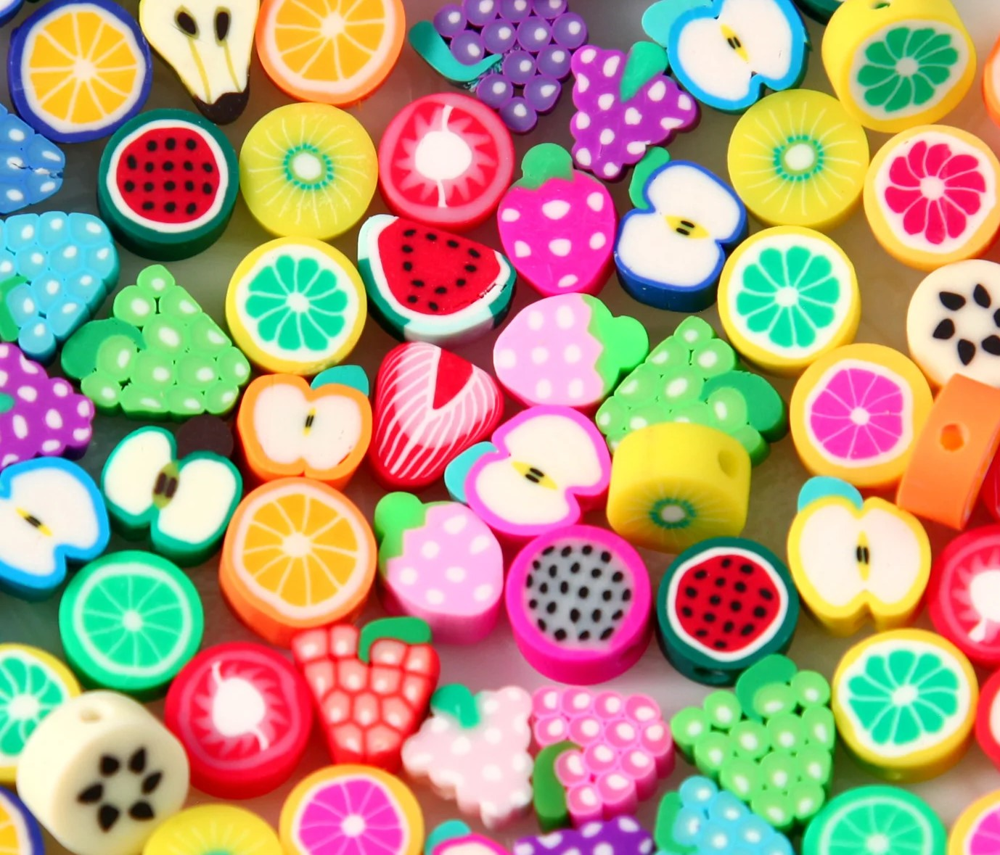

Overview
Purpose
Isn't it a hassle to buy handmade jewelry online? Your never quite sure if it will fit, never quite sure about the quality, and everyone has different tastes. At that point why not make your own? PostakCreations is a website you can go to in order to help you bring your creations to life. You will find step by step instructions from beginning to end. Everything including what Knots to tie to how to bake your own breads in the oven. PostakCreations is your one stop instructional website to help you create exactly what your looking for.
Audience
Tired of never finding the right peice of jewelry? Never quite sure if it will fit once you buy it? This website is for you. No matter your age, or what walk of life you are from, this is a website to help you learn how to create exactly what you are looking for in an assesory or peice of jewelry. Postak Creations will help you stretch your imagination to infinity and beyond.
Branding
Website Logo

Style Guide
Color Palette
Palette URL:
https://coolors.co/2770b6-eab329-cef0fa-09e1f3-2f3f9f| Primary | Secondary | Accent 1 | Accent 2 | Accent 3 |
|---|---|---|---|---|
| 2770b6 | eab329 | cef0fa | 09e1f3 | 2f3f9f |
Typography
Heading Font: IM Fell French Canon
Paragraph Font: Lato, Helvetica, sans-serif
Normal paragraph example
The best Whitewater Rafting in Colorado, White Water Rafting Company offers rafting on the Colorado and Roaring Fork Rivers in Glenwood Springs. Since 1974, we have been family owned and operated, rafting the Shoshone section of Glenwood Canyon and beyond.
Colored paragraph example
Trips vary from mild and great for families, to trips exclusively for physically fit and experienced rafters. No matter what type of river adventures you are seeking, White Water Rafting Company can make it happen for you.
Navigation
Site Map
Content
Home page
Isn't it a hassle to buy handmade jewelry online? Tired of never finding the right piece of jewelry? Never quite sure if it will fit once you buy it? How do you know if it’s really good quality? Well, if you are asking yourself these questions then this website is for you. Postak Creations will help you stretch your imagination to infinity and beyond.
You see, everyone has different tastes as to what looks good and what doesn’t. You probably have your own ideas of what you are looking for. Why not create your own jewelry then? PostakCreations is a place you can come to you bring your creations to life.
Maybe you are wondering just how much creativity you wield. Maybe you aren’t quite sure where to start. No matter what level of artist you are, you will be guided to start making your very own handmade jewelry.
Below You will find step by step instructions from beginning to end. Everything including what Knots to tie to how to bake your own breads in the oven. PostakCreations is your one stop instructional website to help you create exactly what you’re looking for. If you are interested in just learning how to tie the right knots, then you can either click on the “Knots” tab in the navigation bar or click on the knots image below. You will then be directed to the Knots page.
If you are interested in baking your own beads, then you can either click on the “Beads” tab in the navigation bar or click on the beads image below. You will then be directed to the Beads page.
Images for the Home page
You won’t find a better sight for helping you learn all you need to know in order to kick-start your creativity and start designing

Click here to learn about knots

Click here to learn about beads
Knots
Interested in tying the right knots? Congratulations you have made it to the right spot! Below there are different sets of step-by-step instructions complete with images. You are welcome to navigate through to each one to have a look.

Images for the Knots Page
Here you will also find instructions for how to tie beginning knots.
Here you will find instructions for what materials to use and how to measure the right length of strings.

Here you will also find instructions for how to tie a half square knot style, which creates a twisty design.

Here you will also find instructions for how to incorporate beads onto your design and how to tie the end knots.
Beads
Interested in learning how to make beads? Congratulations you have made it to the right spot! Below there are different sets of step-by-step instructions complete with images. You are welcome to navigate through to each one to have a look.
Images for the Beads Page
Here you will find instructions for what materials to use and what tools you need to obtain, even some good suggestions on where to obtain them.
Here you will also find on how to roll a circle design using clay.
Here you will find instructions for using that circle design to make the center piece to a flower.

Here you will also find instructions for how to make a triangle design with clay.
Here you will also find instructions for how to turn the triangle design into flower pedals around your center piece.
Here you will also find instructions for slicing your beads, adding holes, and baking them in the oven.
Here you will also find instructions on how to add a finish gloss to your beads.
Wireframes
Create three wireframes for your site. One for each page and list them here
Home
[Any additional details about home that the wireframe does not make clear]
Knots
[Any additional details about Knots Page that the wireframe does not make clear]
Beads
[Any additional details about Beads Page that the wireframe does not make clear]
Contact Us
[Any additional details about Contact Us Page that the wireframe does not make clear]